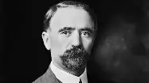
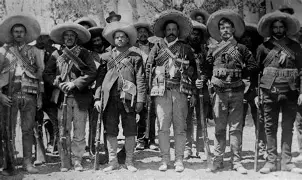
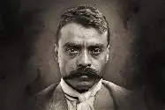
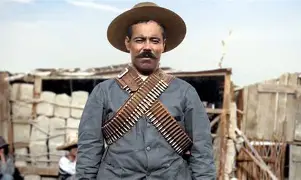
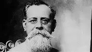

Francisco I. Madero
Convocó al levantamiento armado mediante el Plan de San Luis, defendiendo el principio de la no reelección.
EDICIÓN ESPECIAL • NOVIEMBRE DE 1910
El periódico de nuestra historia
El 20 de noviembre de 1910 inició un movimiento armado que cambiaría el rumbo de México. Miles de ciudadanos se unieron a la lucha contra el gobierno de Porfirio Díaz, exigiendo elecciones libres, justicia y mejores condiciones de vida.

La lucha revolucionaria de 1910

Convocó al levantamiento armado mediante el Plan de San Luis, defendiendo el principio de la no reelección.

Encabezó el movimiento campesino del sur. Su lucha buscaba recuperar las tierras para los pueblos.

Fue un destacado jefe revolucionario del norte y dirigió la famosa División del Norte.

Lideró el movimiento constitucionalista y fue una figura fundamental en la creación de la Constitución de 1917.
Fue un documento proclamado por Francisco I. Madero en octubre de 1910. En él desconocía la reelección de Porfirio Díaz y convocaba al pueblo mexicano a levantarse en armas el 20 de noviembre.
Las mujeres tuvieron un papel muy importante durante la Revolución. Algunas fueron enfermeras, periodistas, mensajeras y combatientes. Entre ellas destacó Carmen Serdán, quien apoyó el movimiento antirreeleccionista.
Fue promulgada el 5 de febrero de 1917. Estableció importantes derechos relacionados con la educación, el trabajo y la propiedad de la tierra, convirtiéndose en uno de los resultados más importantes de la Revolución.
"Sufragio efectivo, no reelección"
— Lema del movimiento maderistaLa Revolución Mexicana no fue un movimiento con un solo objetivo. Diferentes grupos revolucionarios tenían ideas y demandas propias sobre cómo debía cambiar el país.